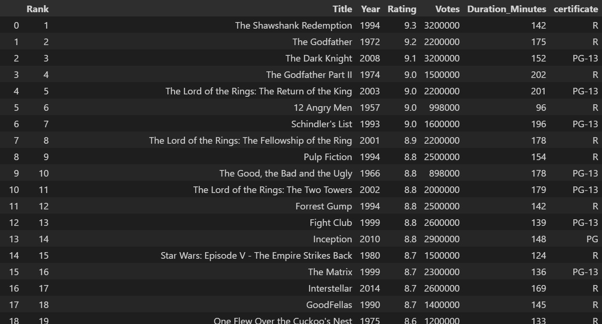
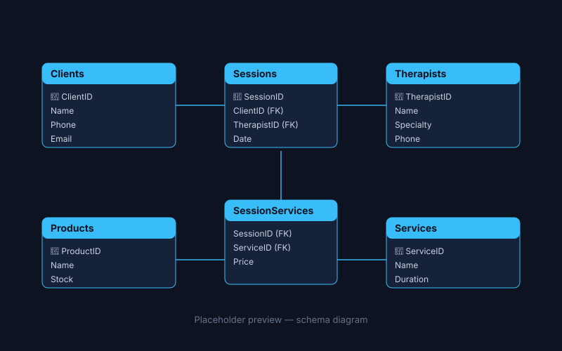
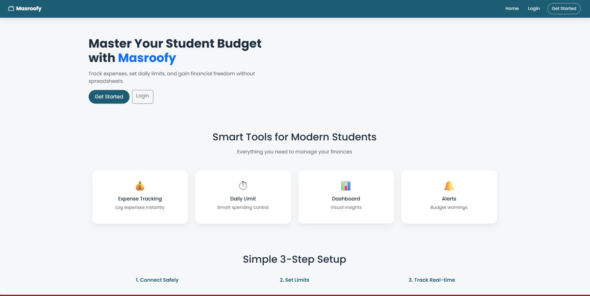
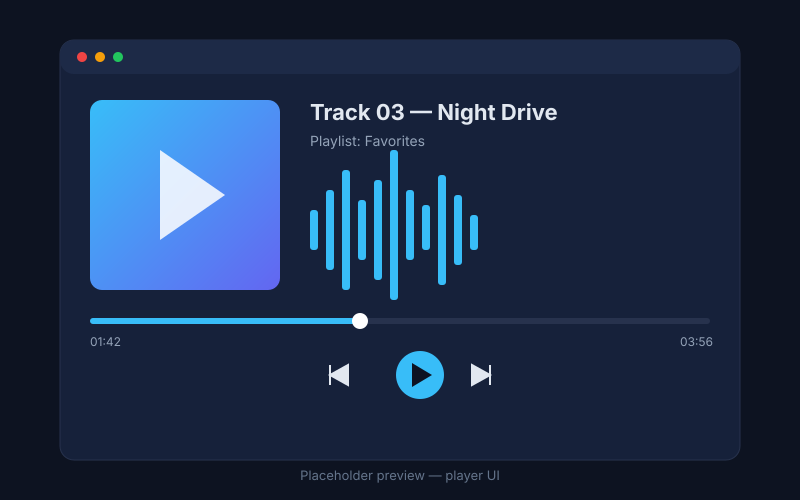
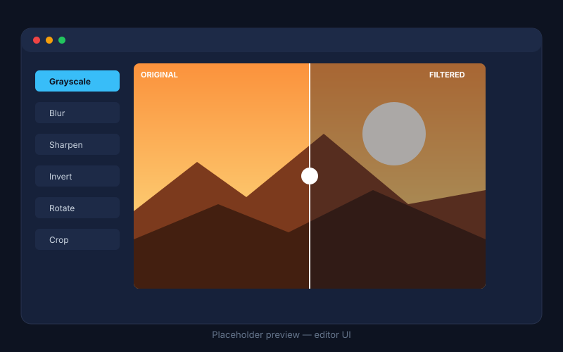
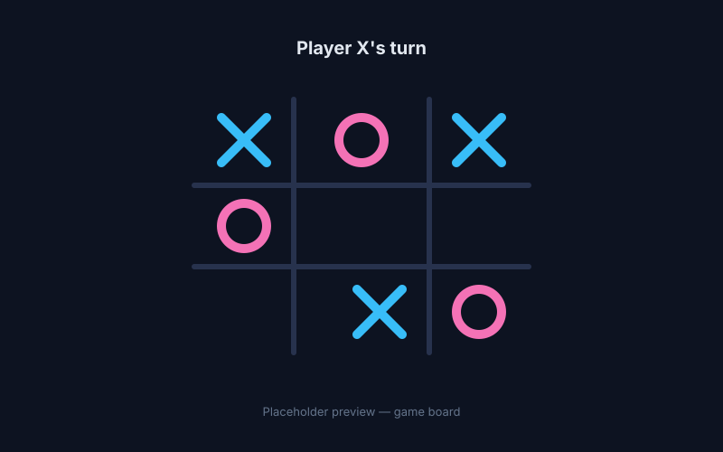

Available for Internships & Data Engineering Projects
Mohamed Saber Hussein Youssef
Aspiring Data Engineer
I am an Information Systems student at Cairo University with a strong interest in Data Engineering. I work with Python, SQL, data processing libraries, and database design to build practical data-focused solutions.
Academic foundation, core engineering principles, and focus on modern data systems.
DegreeB.Sc. in Computers & AI
UniversityCairo University
Department & YearInformation Systems (3rd Year)
I am a third-year Information Systems student at the Faculty of Computers and Artificial Intelligence, Cairo University, passionate about data engineering, data processing, and database systems.
My technical background includes Python, data processing libraries, web scraping, SQL, and relational database design. I also have programming experience with C++ and JavaScript, supported by knowledge of Object-Oriented Programming, SOLID principles, design patterns, and data structures.
Through academic and personal projects, I have explored different areas of software development and data management, from collecting and organizing web data to designing relational databases and building practical applications.
My goal is to strengthen my expertise in Data Engineering, develop reliable and maintainable data solutions, and apply my technical knowledge to real-world problems.
Academic Specialization
Currently studying core curriculum topics including database management systems, data structures and algorithms, system analysis and design, software architecture, and modern programming paradigms.
Major FocusInformation Systems (IS)
Core TrackData Engineering & DB Systems
Academic Background
Education
Formal training in computing, information systems, and data-focused software engineering.
Cairo University — Faculty of Computers and Artificial IntelligenceThird Year
B.Sc. in Computers & AI — Information Systems (IS)
Core curriculum: database management systems, data structures and algorithms, system analysis and design, software architecture, and modern programming paradigms.
Focus on Data Engineering and database systems.
Technical Toolkit
Skills & Technologies
Verified technical proficiencies and conceptual software engineering foundations.
Programming Languages
PythonSQLC++JavaScript
Python & Data Processing
PandasNumPyMatplotlib
Web Scraping
Beautiful SoupSelenium
Database Management
Microsoft SQL ServerRelational Database DesignSQL Queries
Practical experience in data engineering projects, specialized initiatives, and banking software training.
Data Engineer — FreelanceJuly 2026 – Present
Working on data engineering projects involving data collection, processing, and database management.
Applying Python and SQL skills to organize and transform data.
Digital Egypt Pioneers Initiative (DEPI)July 2026 – Present
Data Engineering Track
Developing practical skills in data engineering, data processing, SQL, and Python.
Learning the fundamentals of building data pipelines and managing data.
CIB (Commercial International Bank) — Programming InternAugust 2026
Participated in programming-related training and learning activities.
Gained exposure to programming concepts and practical applications.
Capabilities
What I Can Help With
Available technical support and project collaboration areas suited for student internships and junior-level roles.
Python Data Processing
Organizing structured datasets using Python and Pandas.
Performing basic data cleaning and transformation tasks.
Academic & Project Foundation
Web Scraping & Data Collection
Collecting publicly accessible website data using Beautiful Soup and Selenium.
Organizing extracted information into structured datasets.
Automated Extraction
SQL & Database Design
Writing SQL queries.
Designing relational database schemas.
Creating and managing database tables and relationships.
Relational Integrity Focus
Basic Software Development
Developing small applications using Python, C++, and JavaScript.
Applying Object-Oriented Programming principles to organize code.
Clean Code & OOP
Portfolio Showcase
Featured Projects
Practical implementations spanning data scraping, database architecture, software design, and core programming.
Data Engineering

IMDb Top 250 Movies Web Scraper
Developed a Python-based web scraping project to collect and organize information about movies listed in IMDb's Top 250 ranking.
Scraped movie data using Beautiful Soup from IMDb Top 250.
Structured raw records into clean tabular datasets via Pandas.
Prepared formatted data ready for exploration and analytics.
PythonBeautiful SoupPandas
Database Systems

Beauty Center Database Management System
Designed a relational database for a beauty center using Microsoft SQL Server to organize operational information, including clients, therapists, services, products, and sessions.
Designed schema representing core operational business entities.
Created relational tables with strict referential integrity.
Engineered SQL queries for fast storage and record retrieval.
Microsoft SQL ServerSQLRelational Database Design

Masroofy — Budget Management App
Developed Masroofy, a JavaScript-based personal budget management application designed to organize expenses and manage budgeting cycles.
Structured using Service Layer Architecture for separation of logic.
Applied Observer design pattern for event-driven decoupled updates.
Created 7 UML sequence diagrams and documented with JSDoc.
JavaScriptService LayerObserver PatternJSDocUML

Enhanced Audio Player
Developed an enhanced audio player application using C++ and the JUCE framework, providing audio playback controls, playlist management, and audio processing features.
Implemented playback controls to manage audio tracks smoothly.
Developed playlist functionality to organize multiple audio files.
Applied C++ OOP architecture with the JUCE application framework.
C++JUCE FrameworkOOP

Photo Filters & Editor
Built a C++ photo editing application featuring multiple image filters and editing tools for manipulating digital images.
Developed custom image processing and manipulation functionality.
Implemented algorithmic photo filters to modify visual styles.
Structured pixel manipulation routines using clean OOP classes.
C++Image ProcessingOOP

Tic-Tac-Toe Game
Developed a Tic-Tac-Toe game in C++ to apply programming fundamentals and Object-Oriented Programming concepts in an interactive application.
Implemented core game state engine and player interaction logic.
Built move tracking and dynamic win-condition evaluation routines.
Structured components cleanly to showcase OOP modular design.
C++Object-Oriented Programming
Career Objective
“My career goal is to become a skilled Data Engineer capable of building reliable, scalable, and well-structured data solutions. I aim to strengthen my expertise in Python, SQL, data processing, and database systems while gaining practical experience through challenging projects and professional opportunities.”
Data PipelinesRelational Schema DesignData Quality & IntegrityETL WorkflowsAlgorithmic Problem Solving
Get In Touch
Contact
Reach out for internship roles, academic collaborations, or technical discussions.
Let's Connect
I am actively seeking Data Engineering internships and opportunities to apply my technical knowledge in Python, SQL, and database systems to meaningful engineering challenges.
Demonstration Form: This is a front-end demonstration interface. Sending messages from this static page requires a connected backend service. Submissions provide a direct email link.